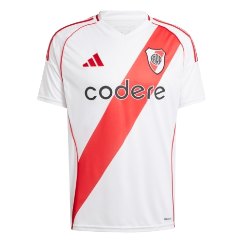
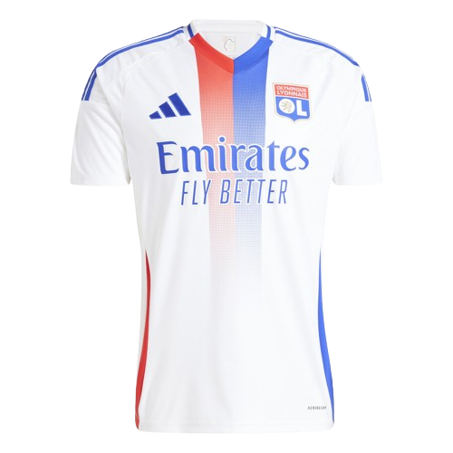
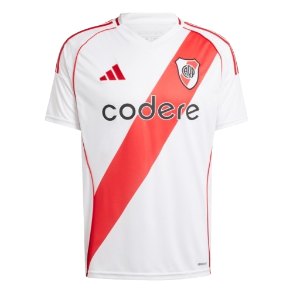
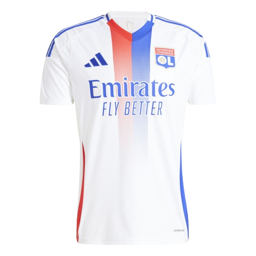
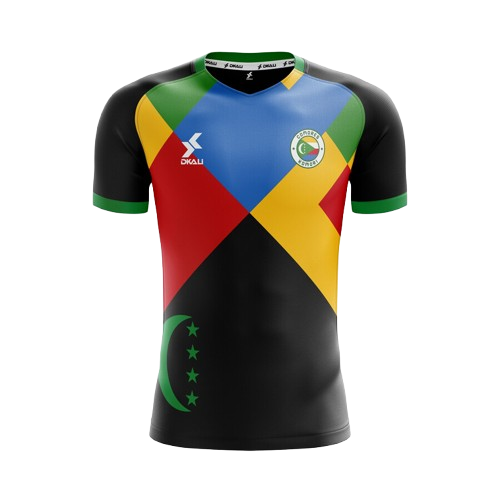
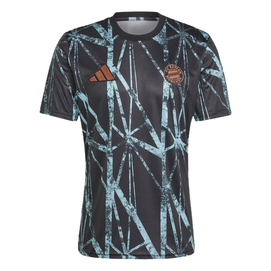
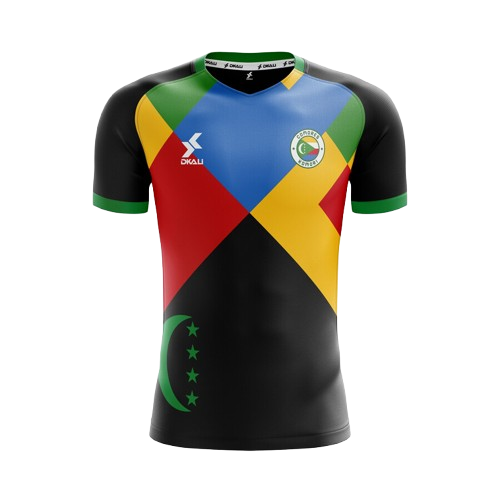
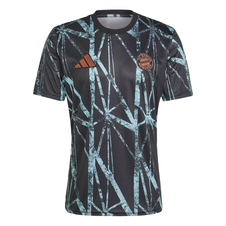

 




Mentions Legales
1. Éditeur du site
Le site www.footjersey.com (ci-après "le Site") est édité par la société FootJersey SAS, une société par actions simplifiée au capital de 10 000 euros, immatriculée au Registre du Commerce et des Sociétés de Paris sous le numéro 123 456 789 RCS Paris.
Siège social : 14 Rue des Champions, 75010 Paris, France
Téléphone : +33 (0)1 23 45 67 89
Email : contact@footjersey.com
Directeurs de la publication : Wallace Verron et Melisa Yilmaz
2. Hébergement
Le Site est hébergé par la société WebPulse Hosting, une entreprise spécialisée dans l’hébergement web.
Adresse : 25 Avenue de l’Innovation, 69003 Lyon, France
Téléphone : +33 (0)4 56 78 90 12
Email : support@webpulsehosting.fr
3. Activité
FootJersey SAS est une entreprise spécialisée dans la vente en ligne de maillots de football officiels et personnalisés. Notre objectif est de proposer aux passionnés de football des produits de qualité, authentiques et accessibles, en collaboration avec des marques reconnues et des clubs partenaires.
4. Propriété intellectuelle
L’ensemble des éléments présents sur le Site (textes, images, logos, vidéos, design, etc.) est la propriété exclusive de FootJersey SAS ou de ses partenaires. Toute reproduction, distribution, modification ou utilisation, même partielle, sans autorisation préalable écrite de FootJersey SAS est strictement interdite et passible de poursuites conformément aux lois en vigueur.
5. Collecte et traitement des données personnelles
Conformément au Règlement Général sur la Protection des Données (RGPD) et à la loi Informatique et Libertés du 6 janvier 1978 modifiée, FootJersey SAS collecte et traite les données personnelles des utilisateurs dans le cadre de la gestion des commandes, de la relation client et de l’amélioration de ses services.
our en savoir plus sur la gestion de vos données et exercer vos droits (accès, rectification, suppression, etc.), veuillez consulter notre Politique de confidentialité accessible sur le Site ou nous contacter à l’adresse : donnees@footjersey.com.
6. Conditions générales de vente
Les ventes réalisées via le Site sont régies par nos Conditions Générales de Vente (CGV), consultables à tout moment sur la page dédiée. Elles définissent les droits et obligations des parties dans le cadre des transactions effectuées sur FootJersey.
7. Litiges
En cas de litige, les parties s’engagent à tenter une résolution amiable avant toute action judiciaire. À défaut, les tribunaux compétents sont ceux de Paris, et le droit applicable est le droit français.